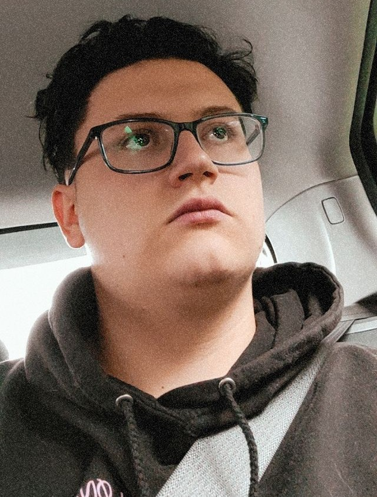

About myself:
My name is Philpp Gerstl. I am 21 years of age and I live in Kirchberg ob der Donau which lies in the beautiful Mühlviertel. I've been living there since 2009 since we had to move away from Linz because I have 4 siblings (2 pairs of twins) and my, at that time single, mum couldn't afford a flat in Linz. My family and I love cats, and we pretty much had at least 1-4 cats ever since we moved. 1 Year ago I got my license and my grandma gifted me her old car, which is a 2005 Golf 4 420.000 km on it, but still drives like a charm.